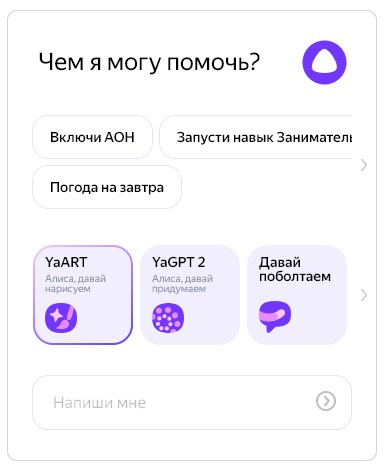

YandexGPT
YandexGPT - российская нейросеть, разработанная компанией Яндекс, которая генерирует текстовые ответы на запросы пользователей на разные темы — от технологий и литературы до рецептов блюд и списка фильмов на вечер. YandexGPT генерирует не только тексты, но и встроена в голосовой помощник Алиса. Поэтому общаться с ней можно не только в чате, но и задавая вопросы вслух.
